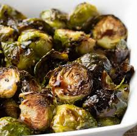

Oven-Roasted Balsamic Brussel Sprouts

Ingredients You'll Need:
- Fresh Brussel Sprouts
- 1.5T Virgin Olive Oil
- 2.5T Balsamic Vinegar
- 3-4 Cloves Garlic
- 1/2t Kosher Salt
- 1/4t Pepper
Instructions
- Preheat oven to 425 degrees Farenheit. Line a baking sheet with aluminum foil and set aside.
- Rise sprouts with cool water and then chop off the tough ends. Then chop each sprout in half. Place in medium sized bowl.
- In small bowl, whisk together oil, half of the balsamic vinegar, minced garlic, salt and pepper.
- Drizzle mixture over brussel sprouts and toss to combine.
- Spread srpouts evenly over baking sheet and roast for 20-25min. (or until the spourts are tender-crisp)
- Remove from oven, transfer to serving dish, drizzle with the reserved balsamic vinegar, and season with salt to taste.
- Enjoy!